ԲՆՈՒԹԱԳԻՐ
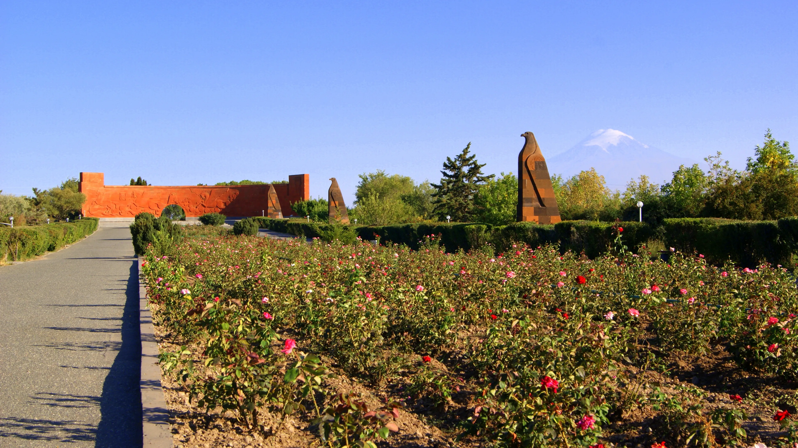
ՏՎՅԱԼՆԵՐ
Ուղղություն
Հյուսիսից
Հյուսիս-արևելքից
Արևելքից
Հարավ-արևելքից
Արևմուտքից
Հարավ-արևմուտքից
Հարավից
Սահմանակից մարզ
Արագածոտն
Կոտայք
Երևան
Արարատ
-
-
-
Հարևան երկրներ
-
-
-
-
Թուրքիա
Թուրքիա
Թուրքիա
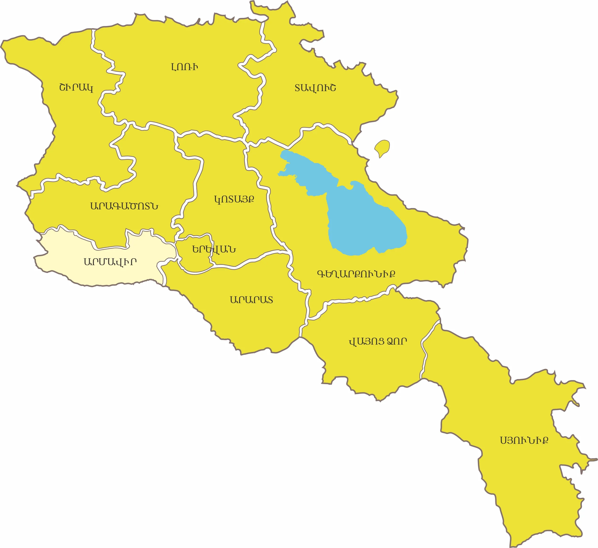
Հիմնադրումը
ՀՀ Արմավիրի մարզը ստեղծվել է 1995 թվականի ապրիլի 12-ին։
Տարածքը
Արմավիրի մարզը զբաղեցնում է Հայաստանի ամբողջ տարածքի մոտ 4,2 %-ը (1242 կմ²)
Վարչական կենտրոնը
Արմավիր քաղաք (Սարդարապատ, ապա՝ Հոկտեմբերյան): Գտնվում է Երևանից 48 կմ հեռավորությամբ:Տարածքը բնակեցված է եղել մ.թ.ա. II հազ.-ից առաջ: Արարատյան թագավորության (Ուրարտու) շրջանում,մոտ մ.թ.ա.776 թ.-ն, Արգիշտի Ա-ն բերդ է կառուցել և կոչել Արգիշտիխինիլի (մինչև մ.թ.ա. 8-5-րդ դարեր): Մ.թ.ա. 189 թ.-ին Արտաշես Ա-ն հիմնադրեց Մեծ Հայքի թագավորությունը և Արմավիրը դարձրեց մայրաքաղաք։
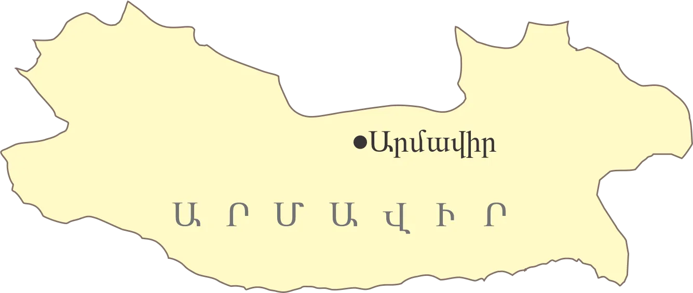
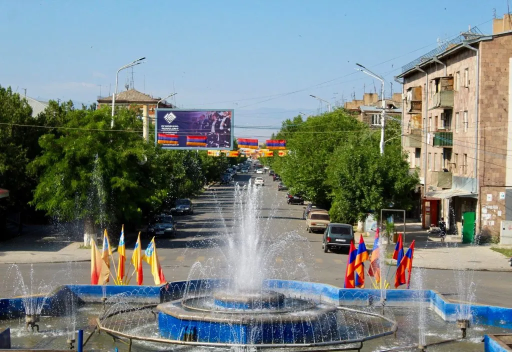
Ցուցիչ
Տարածք
Կոորդինատներ
Բարձրություն
Ամենաբարձր գագաթ
Վարչական կենտրոն
Տարածաշրջաններ
Քաղաքներ
Գյուղեր
Բնակչություն
Հեռավորություն Երևանից
Փոստային դասիչ
Թեժ գիծ
Վեբ կայք
Տվյալ
1,242 կմ² (4.2%)
44.03° ավ. ե.
800-1000մ
1286 մ ( Կարմրաթառ լեռ)
Արմավիր
Արմավիր, Էջմիածին, Բաղրամյան
Վաղարշապատ, Արմավիր, Մեծամոր
95
265.8 հազ. մարդ (8.9%)
45 կմ
0901-0918
(+374 237) 2 11 57
www.armavir.mtad.am
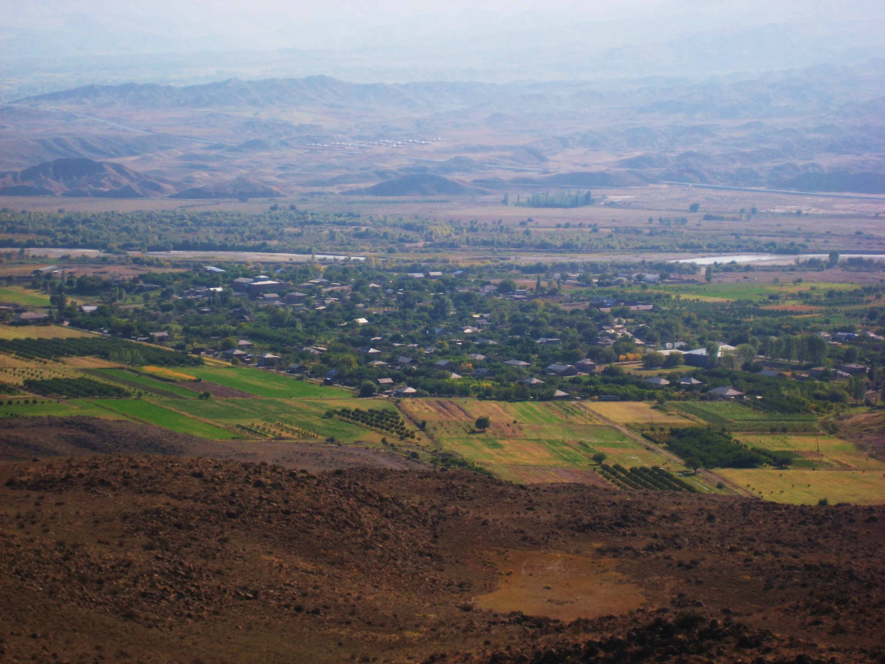
Ամենաբարձր գագաթ 1286 մ ( Կարմրաթառ լեռ)
Մարզային հեռախոսային կոդեր
Բնակավայր
Բաղրամյան
Նորակետ
Ջրառատ
Խորոնք
Մյասնիկյան
Մրգաշատ
Բամբակաշատ
Տանձուտ
Կոդ
233
231 95
231 98
231 99
233
237
237
237
Մարզպետարան/Կապ
Վեբ․ http://armavir.mtad.am/
-
-
-
-
-
-
-
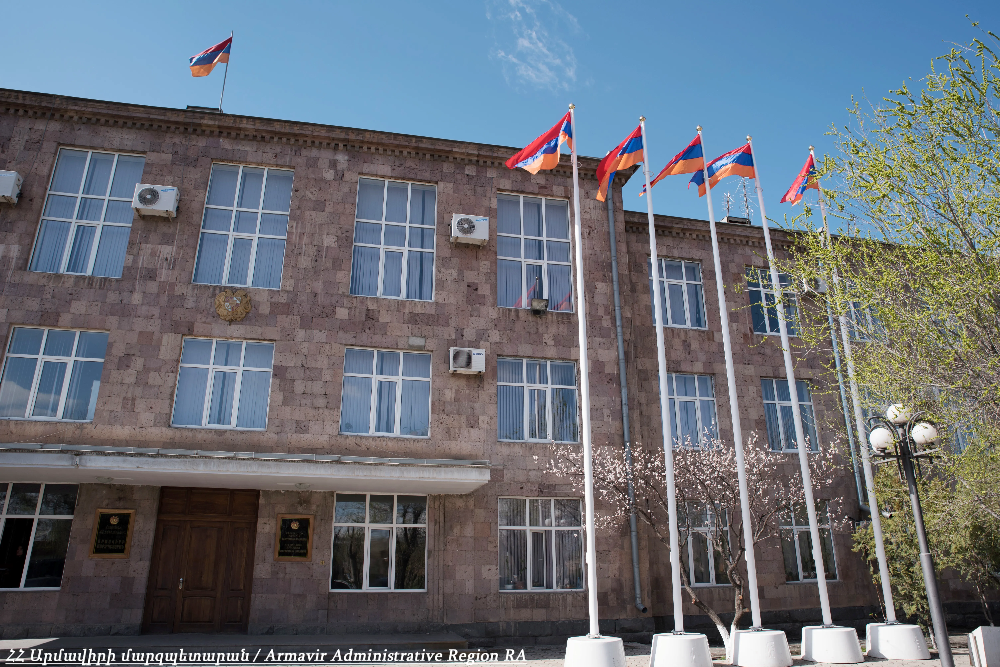
ԻՆՉՊԵՍ ՀԱՍՆԵԼ
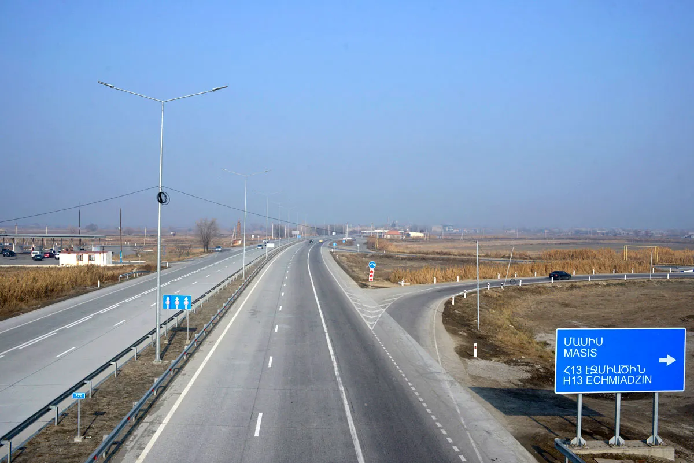
Ավտոմայրուղիներ
- Արմավիրի մարզը կապված է Երևանի և հարավային Հայաստանի հետ Մ-5 ավտոմայրուղու միջոցով։
- Մ-3 ավտոմայրուղին Արմավիրի մարզը կապում է հյուսիսային Հայաստանի հետ։
Երթուղային տաքսի և ավտոբուս
- Արմավիր քաղաք կարելի է հասնել ավտոբուսով և երթուղային տաքսիով։
- Տրանսպորտային միջոցները շարժվում են Կենտրոնական երկաթուղային կայարանից, Նորագավիթից և Կիլիկիա ավտոկայանից։
- Տոմսի արժեքը՝ 350 դրամ։․
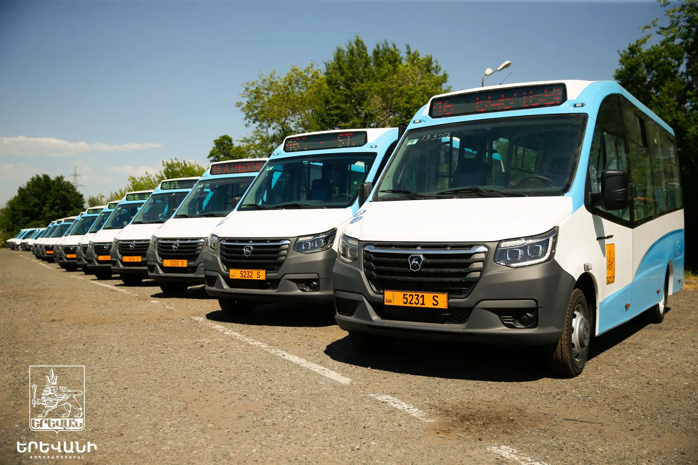
Երկաթուղի
- Գնացքը հասնում է Արմավիր քաղաք 50 րոպեի ընթացքում։
- Կոնտակտ և տոմսերի արժեք՝ նույնը, 350 դրամ։
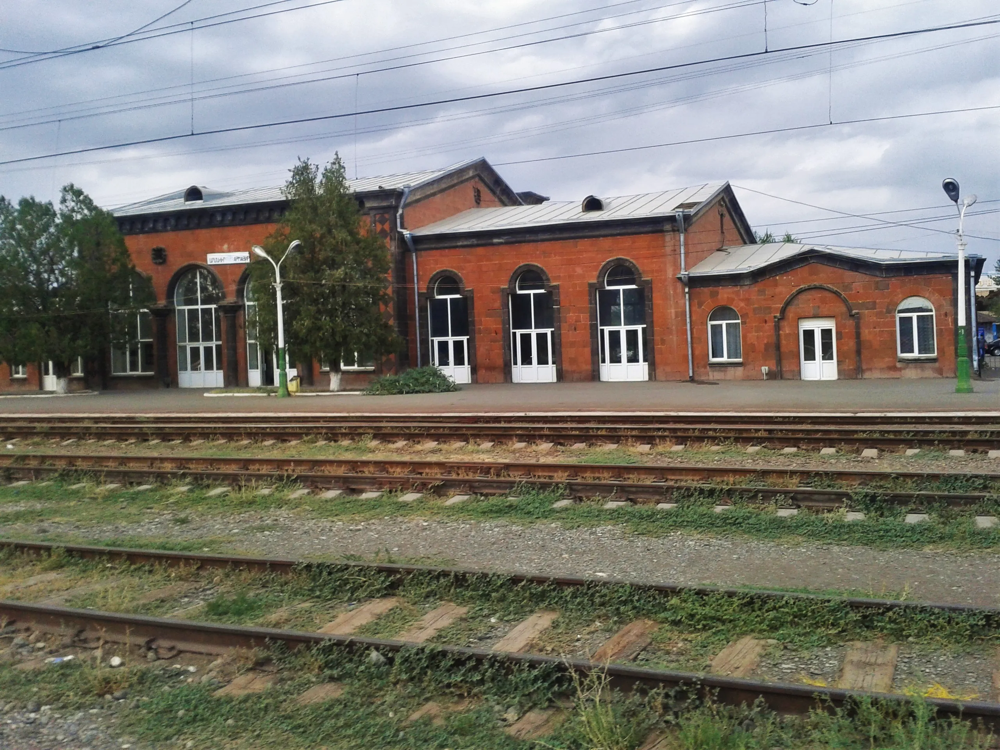
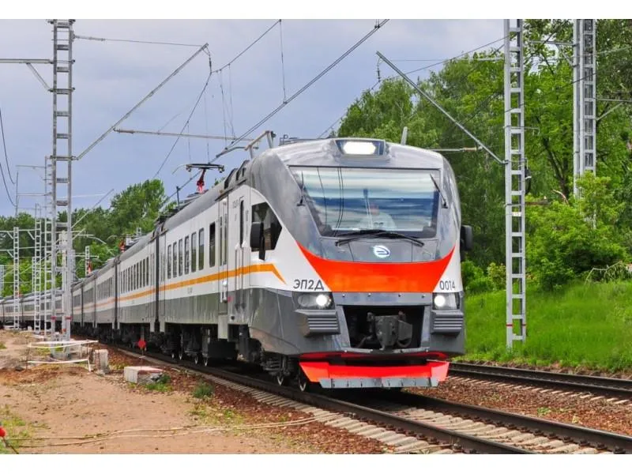
ԿԼԻՄԱ
Արմավիրի մարզի կլիման խիստ ցամաքային է:: Տեղանքի մակերևույթը տափարակ է, Արաքս գետի ուղղությամբ այն հավասարաչափ իջնում է կիլոմետրում մոտ 1.8մ, ծովի մակերևույթից բարձր է 800-1000մ` ընդգրկելով նաև շրջակա նախալեռները` մինչև 1200մ:
Կլիմայի առանձնահատկություններ
Ցուրտ ժամանակաշրջանը տևում է դեկտեմբերի սկզբից մինչև փետրվարի վերջը:
Եղանակների բնութագիր
Ձմեռ - ցուրտ, անամպ և անհողմ են
Ամառ - տևական են՝ 4–5 ամիս
Գարուն – սովորաբար կարճ է տևում, ամպրոպները և կարկուտները ավելի շատ են դիտվում
Աշուն – տաք, արևոտ, առանց ուժեղ քամիների, հարմար գյուղատնտեսական աշխատանքների համար
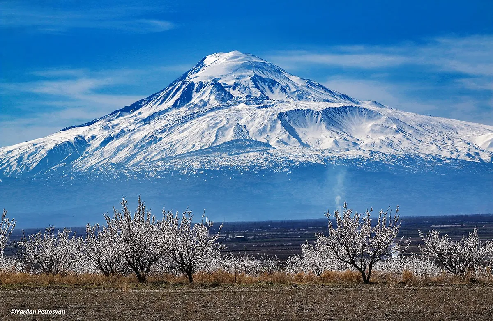
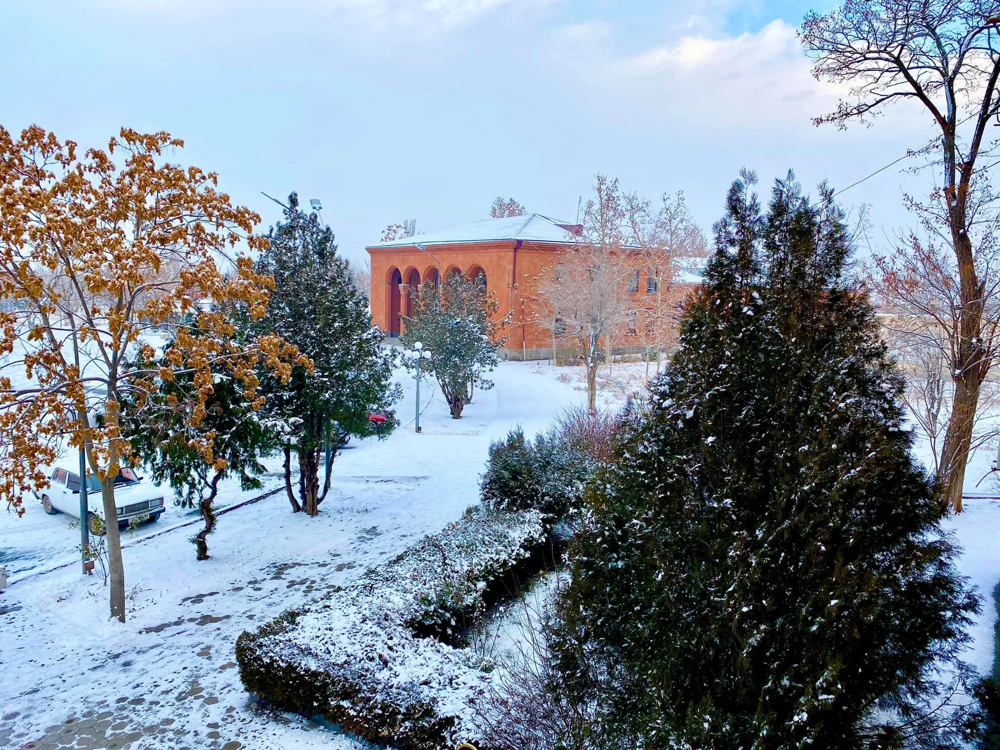
Ջերմաստիճան
- Օդի տարեկան միջին ջերմաստիճանը՝ 11–13°C
- Հունվար ամսվա միջին ջերմաստիճան՝ -3…-5°C
- Անսառնամանիք օրերի միջին թիվը՝ 204 օր։
- Ամառային միջին ջերմաստիճանը՝ 24–26 °С, շոգերը հասնում են +40…+42°C․
- Ցուրտ ժամանակաշրջանը տևում է դեկտեմբերի սկզբից մինչև փետրվարի վերջ։
- Ձմռան ընթացքում դիտվում են սառնամանիքներ մինչև -31°C (Արմավիր, Մերձավան)։
- Ջեռուցման շրջանը (8 °С-ից ցածր)՝ նոյեմբերի 6-ից մինչև մարտի 29-ը (145 օր)
Տեղումներ
- Մթնոլորտային տեղումների տարեկան քանակը՝ ≤ 300 մմ
- Արաքս գետի մերձակա շրջանները չորային են, տեղումների քանակը կազմում է 160-210մմ, բարձրադիր շրջաններում` 260-300մմ:
- Ձնածածկույթով օրերի միջին թիվը՝ 40 օր, առավելագույնը՝ 126 օր, իսկ կայուն ձնածածկույթը (30 օր և ավելի) առաջանում է երկու տարին մեկ անգամ։
- Գարնանը հաճախ առաջանում են ամպրոպներ և կարկուտ, վտանգավոր գյուղատնտեսական մշակաբույսերի համար
- Մառախլապատ օրերի թիվը միջինում կազմում է 11 օր (առավելագույնը 38 օր):
Քամիներ
- Մարզին բնորոշ է քամիների լեռնա-հովտային շրջանառություն:
- Քամու միջին տարեկան արագությունը կազմում է 1-3մ/վ, առավելագույնը` 24-30մ/վ, իսկ պոռթկումը հասնում է մինչև 36մ/վ:
- Ձմռանը գերակշռում են անդորրային եղանակներ:
Արևափայլ
- Տևողությունը՝ 2,578 ժամ/տարի
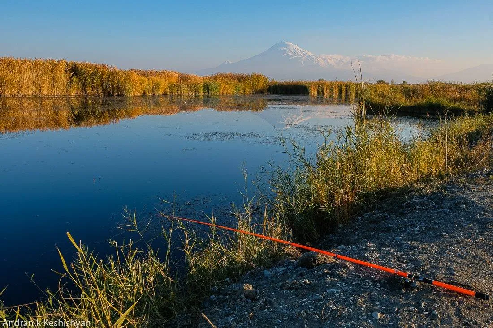